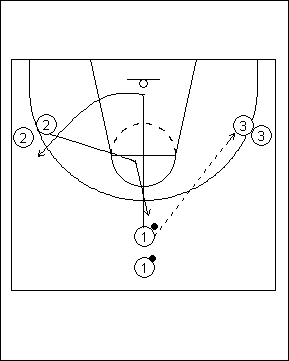
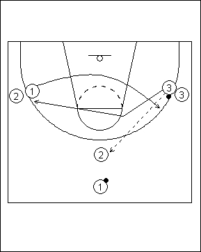

Catégorie : PASSES (Pas-010)
Déroulement
- Trois files de joueurs, une en position de meneur et deux comme ailiers. Les ballons sont dans la file 1.
- Les passes se font toujours sur une même ligne, à savoir ici entre le meneur et l’ailier droit. Chaque fois qu’une passe est réalisée, les deux autres joueurs (le passeur et le joueur qui ne reçoit pas le ballon) changent de place. Donc ici, le premier joueur de la file 1 passe au premier joueur de la file 3, puis les premiers joueurs des files 1 et 2 
- Tandis que la vague de trois suivante démarre, 1 va en 2, 2 en 3 et 3 en 1.
Coaching points
- Toujours demander des mouvements "Basket" : facing the basket (square up) à chaque réception du ballon; après chaque passe, couper en appelant le ballon, etc …
- Insister surtout sur la qualité de toutes les passes.